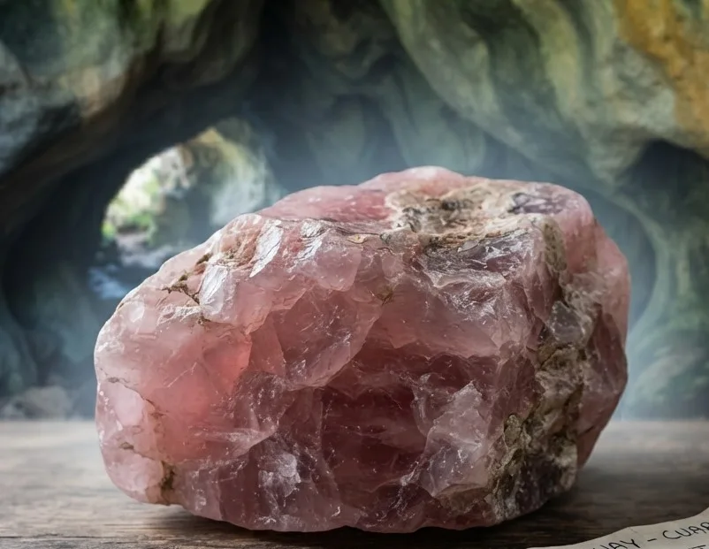
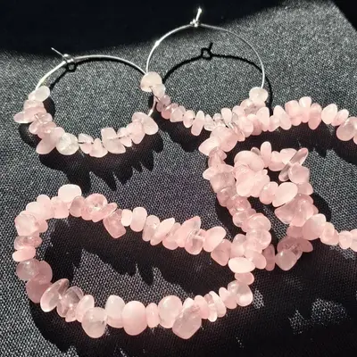
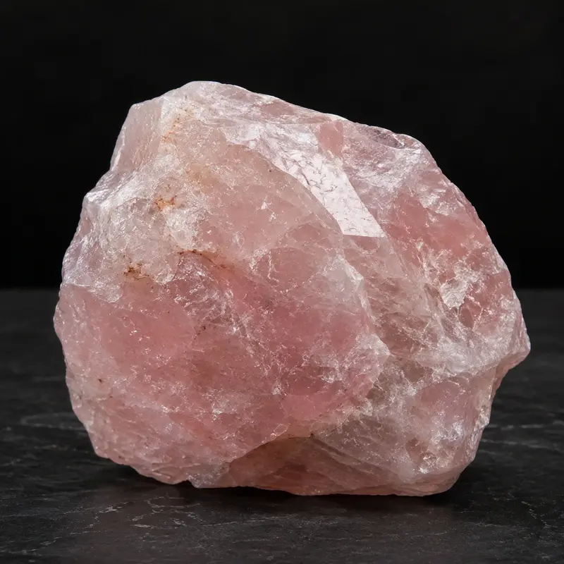
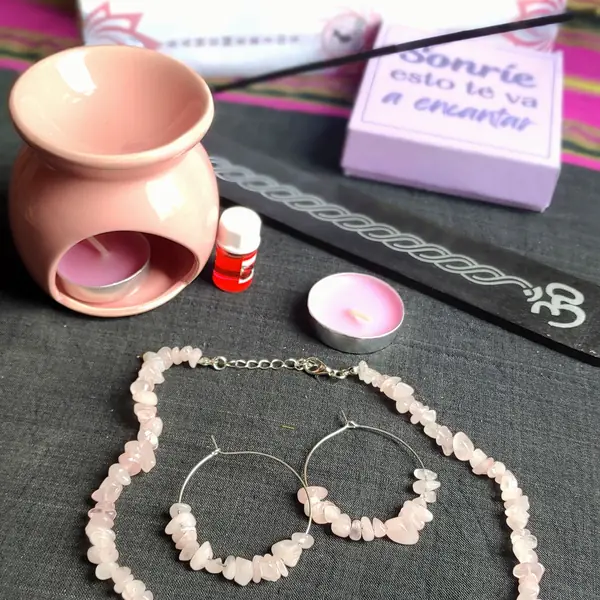
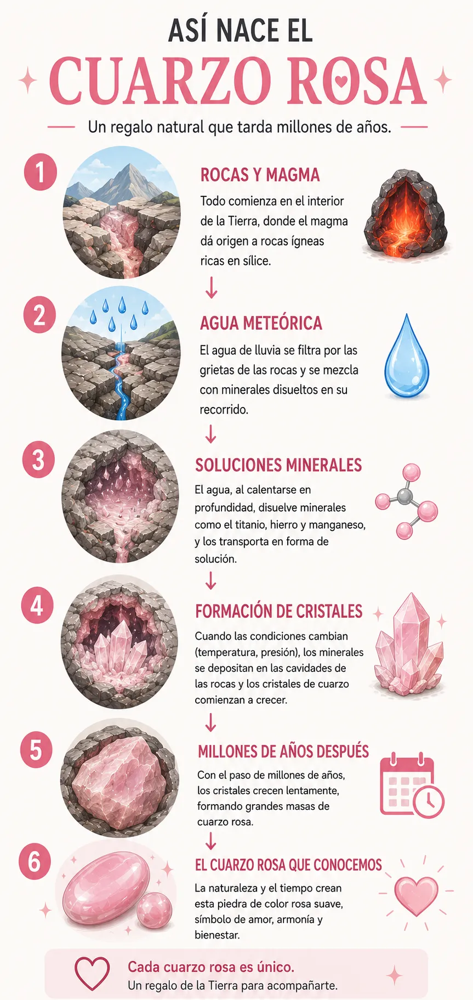

Cada piedra tiene su propia historia, sus asociaciones y los significados
que distintas tradiciones le han dado a lo largo del tiempo. Pero también
existe algo más personal, la conexión que cada persona establece con ella.
Puedes elegir una piedra por lo que representa, por su belleza, por su historia
o simplemente porque sentiste que era la indicada.
No hay una única forma de conectar con una piedra.
Explora, descubre y déjate llevar por la piedra que más te atraiga.
Cuarzo Rosa: significado, propiedades y uso
Cuarzo rosa en bruto

Así podemos encontrarlo en la naturaleza, como una masa de cuarzo de tonos rosados sin caras cristalinas definidas.
Cuarzo rosa pulido

Al pulirse, sus tonalidades rosadas y su suave translucidez adquieren una apariencia especialmente delicada.
¿Qué es el Cuarzo Rosa y por qué nos atrae?
El cuarzo rosa es una variedad de cuarzo reconocida por sus tonalidades rosadas, que pueden ir desde un rosa muy suave, casi blanco, hasta tonos más intensos. A diferencia de otros cuarzos que solemos imaginar como cristales transparentes y perfectamente formados, el cuarzo rosa aparece habitualmente en forma masiva, es decir, como una masa de mineral sin caras cristalinas bien definidas.
Su aspecto suele ser translúcido y ligeramente lechoso. Esa apariencia está relacionada con diminutas inclusiones minerales que se encuentran en su interior. El cuarzo rosa sigue siendo cuarzo, lo que cambia es la historia que ocurrió dentro del mineral durante su formación.
Significado espiritual del Cuarzo Rosa
En distintas tradiciones espirituales y en el mundo de los cristales, el cuarzo rosa se asocia especialmente con el amor, la ternura, la armonía y el cuidado emocional.
Amor propio: muchas personas lo eligen como símbolo de aceptación, autoestima y una relación más amable consigo mismas.
Amor y vínculos: tradicionalmente se lo relaciona con el afecto, la empatía, la ternura y los vínculos basados en el cuidado.
Armonía emocional: se lo asocia con la serenidad, la suavidad y el equilibrio en momentos de sensibilidad.
Apertura: también se lo relaciona con la capacidad de dar y recibir afecto con mayor apertura.

Cómo usar el Cuarzo Rosa en tu día a día
En joyería: llevarlo contigo puede convertirlo en una presencia cercana y en una forma de expresar aquello que representa para ti.
Durante una pausa: puedes sostenerlo mientras meditas, respiras o simplemente te regalas unos minutos de calma.
En el hogar: puedes colocarlo junto a otros objetos que tengan significado para ti y crear un pequeño rincón de armonía.
Como regalo: es especialmente elegido cuando quieres transmitir cariño, ternura, afecto o buenos deseos.

Cómo cuidar un Cuarzo Rosa
El cuarzo rosa tiene una dureza de 7 en la escala de Mohs, por lo que es una piedra adecuada para joyería, pero eso no significa que sea imposible de rayar o dañar. La escala de Mohs mide resistencia al rayado, no resistencia a golpes o roturas.
Si es una piedra suelta, en bruto o una pieza decorativa, usa únicamente agua fría, sin jabón, y déjala secar al aire sobre un paño.
Si lo llevas como joya de uso diario y pierde brillo por el sudor o el uso frecuente, sigue el método de limpieza detallado en nuestra Guía Nalomy.
En ambos casos, evita golpes fuertes, productos químicos agresivos, el lavavajillas y cambios bruscos de temperatura.
También conviene evitar la exposición prolongada a una luz solar muy intensa, especialmente durante períodos largos, ya que algunos ejemplares pueden experimentar cambios de color con una exposición prolongada. Si lo llevas como joya, guárdalo separado de otros minerales o piezas que puedan rayarlo.
¿Es el Cuarzo Rosa lo que buscas?
El cuarzo rosa es ideal si estás buscando una piedra que te recuerde la importancia de la compasión, la paz interior y la aceptación. Es una compañía perfecta para momentos de sensibilidad y procesos de autocuidado.
A la hora de hacer un regalo, es una de las opciones más hermosas para transmitir afecto sincero y buenos deseos. Resulta ser un detalle lleno de ternura para alguien que está pasando por un momento donde necesita contención, o simplemente para recordarle a un ser querido cuánto lo valoras.
Si has llegado hasta aquí y sientes que no es exactamente lo que buscas, puedes consultar nuestra tabla Tabla comparativa con el resto de las piedras con las que trabajamos para ayudarte a encontrar la indicada.
Nuestro sentir en Nalomy
Hay algo en el cuarzo rosa que nos encanta. Su color no es intenso ni pretende llamar la atención. Tiene una suavidad que hace que muchas personas se acerquen a él casi sin pensarlo.
Y quizás por eso nos parece una piedra tan bonita para hablar del amor de una manera más amplia. No solamente del amor que damos a otras personas, sino también del cuidado, la ternura y el espacio que nos permitimos recibir.
Para nosotras, el cuarzo rosa tiene mucho de armonía, cariño y cuidado. Por eso lo elegimos como piedra central de la Mystic Box Armonía. No creemos que una piedra tenga que hacer el trabajo por ti. Nos gusta pensarla como un recordatorio de aquello que quieres cuidar o cultivar en ese momento, porque también mereces recibir el mismo cariño que tantas veces entregas.

Preguntas frecuentes sobre el Cuarzo Rosa
¿El cuarzo rosa puede perder su color?
Sí, es recomendable evitar la exposición prolongada a la luz solar muy directa e intensa. Aunque no ocurre de forma inmediata, exponerlo al sol fuerte durante periodos largos puede hacer que algunos ejemplares palidezcan o modifiquen levemente su tono.
¿Cómo saber si el cuarzo rosa es auténtico y no está teñido?
El cuarzo rosa natural suele tener un color suave y algo translúcido, con variaciones sutiles de tono dentro de la misma pieza — esa palidez es justamente una señal de que es auténtico, no de que sea falso. Las piezas teñidas, en cambio, suelen verse demasiado uniformes, muy saturadas o casi opacas.
¿Es normal que mi cuarzo rosa sea transparente?
Puede pasar, pero es poco común: el cuarzo rosa natural casi nunca es completamente transparente, ya que sus inclusiones minerales suelen darle un aspecto lechoso o algo nublado. Si tu pieza es perfectamente transparente como el vidrio y no se distingue ningún tono rosado en su interior, probablemente no sea cuarzo rosa, sino cuarzo cristal (transparente).
Lleva el Cuarzo Rosa contigo
El cuarzo rosa es la piedra central de nuestra Mystic Box Armonía, creada para acompañarte a conectar con el amor, el cuidado y esos pequeños momentos que quieres regalarte.
Descubrir Mystic Box Armonía¿Quieres saber más?
¿Cómo nace un Cuarzo Rosa?
El cuarzo está compuesto por silicio y oxígeno (SiO₂). El cuarzo rosa se encuentra principalmente asociado a pegmatitas, un tipo de roca ígnea que se forma durante las últimas etapas del enfriamiento de un magma. A medida que otros minerales van cristalizando, el material que queda concentra agua y elementos químicos que permiten que algunos cristales alcancen tamaños extraordinarios.

También aparece en algunas venas hidrotermales. El color delicado del cuarzo rosa masivo está relacionado con diminutas fibras minerales microscópicas (de entre 0,1 y 0,5 micrómetros de ancho) que quedaron atrapadas durante su formación. Estas fibras contienen hierro y titanio, interactuando con la luz para producir el color rosa.
Incluso, cuando estas inclusiones están orientadas de una manera específica, pueden producir un fenómeno óptico llamado asterismo, mostrando una estrella de seis rayos .
Una piedra con historia
El cuarzo rosa acompaña a la humanidad desde hace miles de años. Institutos como GIA recogen hallazgos de cuentas de cuarzo rosa fechadas aproximadamente en 7000 a. C. en la región de la antigua Mesopotamia. Siglos después, entre 800 y 600 a. C., los asirios ya lo utilizaban para elaborar joyería.
Los romanos lo utilizaban como sello para identificar propiedad, mientras que en el antiguo Egipto era apreciado como talismán asociado con la juventud. Con el paso de los siglos, continuó apareciendo en tallas y objetos decorativos, consolidándose como símbolo del amor.
¿Y en Uruguay? Sí, el cuarzo rosa también ha sido identificado en nuestro país. Aparece entre los minerales registrados en el Distrito Gemológico de Los Catalanes, en el departamento de Artigas, compartiendo su historia con ágatas y amatistas locales.
Fuentes y referencias
- Gemological Institute of America (GIA). Información sobre cuarzo rosa, características, color y dureza. Ver fuente
- GIA — Rose Quartz Description. Información sobre pegmatitas e inclusiones microscópicas. Ver fuente
- GIA — Rose Quartz History and Lore. Información histórica y asociaciones culturales. Ver fuente
- American Mineralogist. Investigación sobre las nanofibras minerales y su relación con el color. Ver estudio
- Ministerio de Industria, Energía y Minería — Uruguay. Documentación del Distrito Gemológico de Los Catalanes en Artigas. Ver fuente